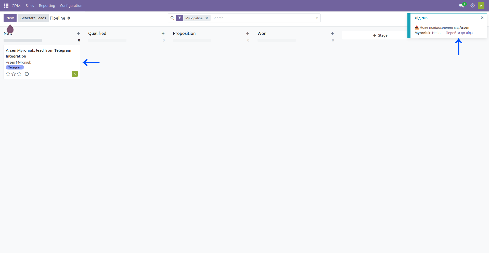
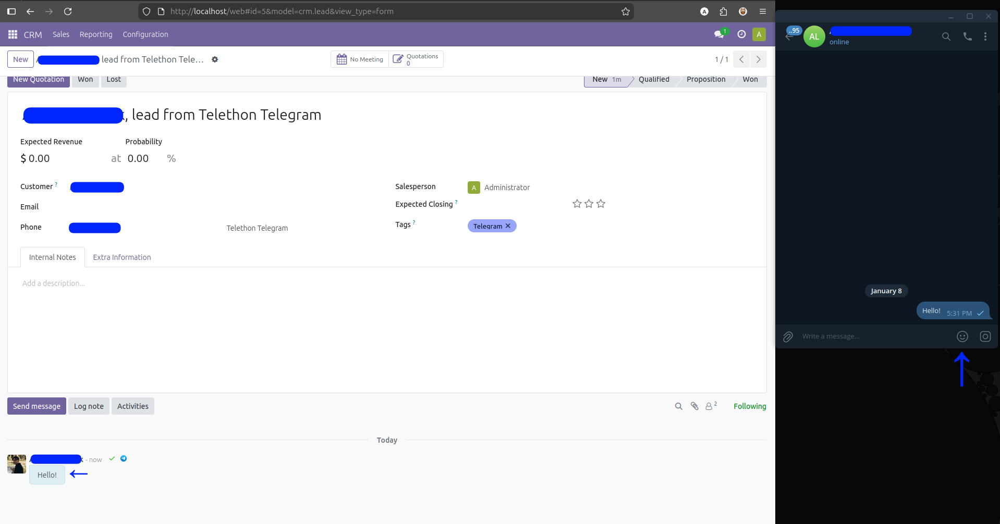
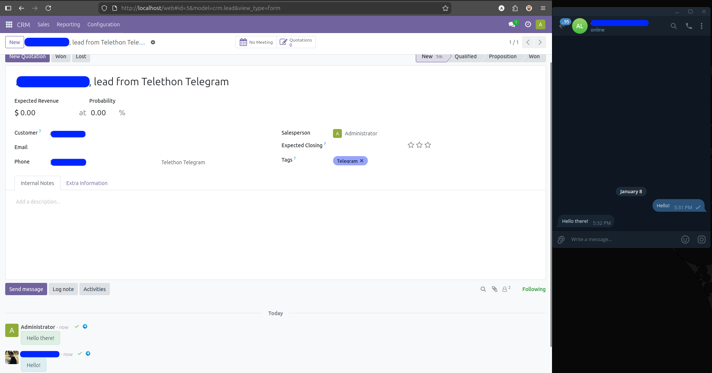
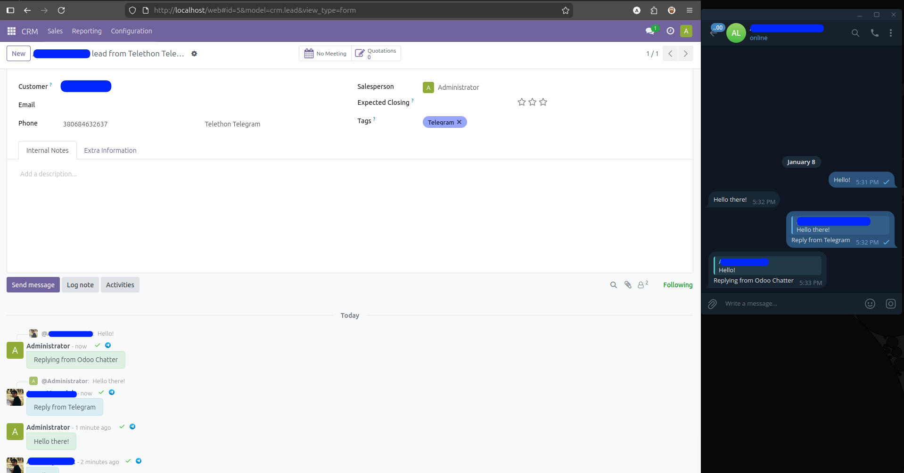

Module Functionality
- Auto-create a lead for each new inquiry
- Channel tags displayed in the lead card
- Realtime notification about new lead/conversation for assigned Manager

- Messaging, file sharing, manager reassignment


- Message status updates (read/delivered)

- Supports replies from Lead Chatter & Discuss Channel


Distribution
- Last-agent handling or round-robin distribution
- Manual reassignment of responsible user in the lead card